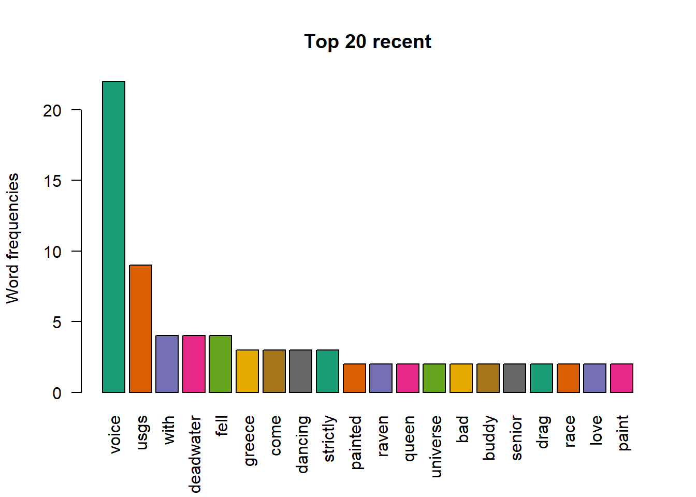
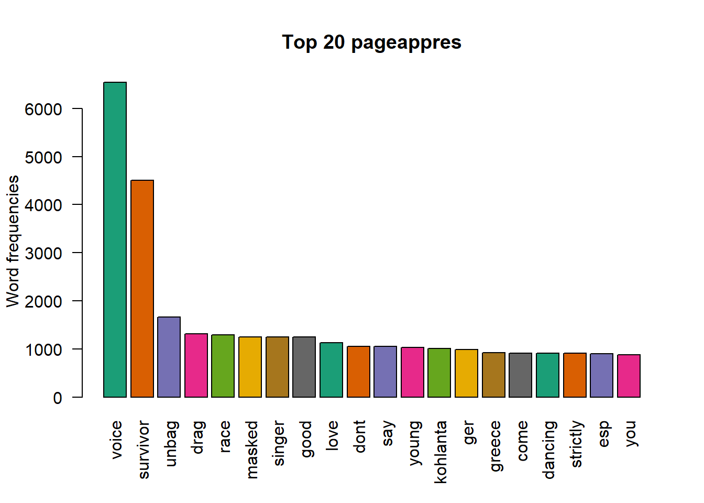
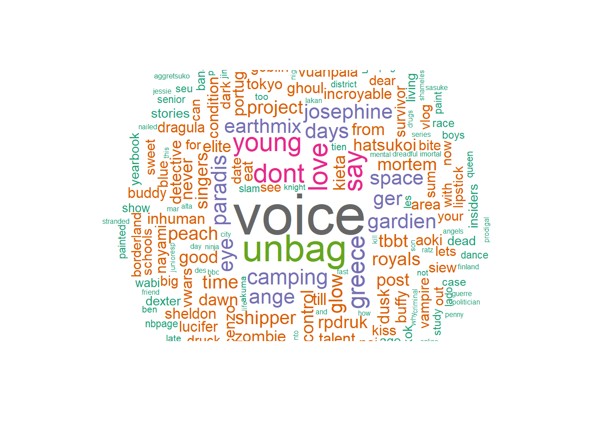
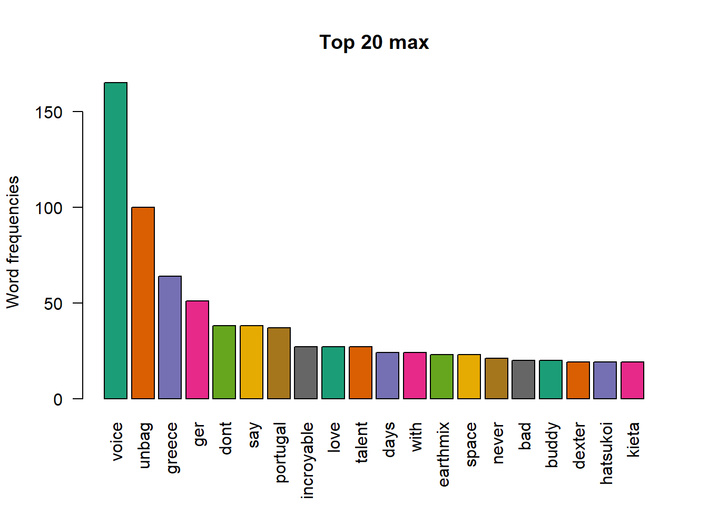

Wordcloud
2021-10-14
accueil

en cours


recent

termine


copy


pageappres

pageappressup

conclu

conclubis


sem


mois


max

eff

resume


stats
## [1] "accueil"## Horodateur Titre saison episode
## Length:7332 Length:7332 Min. : 0.000 Min. : 0.00
## Class :character Class :character 1st Qu.: 1.000 1st Qu.: 4.00
## Mode :character Mode :character Median : 2.000 Median : 8.00
## Mean : 3.968 Mean : 25.67
## 3rd Qu.: 4.000 3rd Qu.: 18.00
## Max. :41.000 Max. :353.00
## status tisa tisaep indice
## Length:7332 Length:7332 Length:7332 Min. : 0.00
## Class :character Class :character Class :character 1st Qu.: 6.00
## Mode :character Mode :character Mode :character Median : 20.00
## Mean : 73.64
## 3rd Qu.: 90.00
## Max. :5181.00
## sa hh image descr.img
## Length:7332 Min. : 0.0 Length:7332 Length:7332
## Class :character 1st Qu.: 2.0 Class :character Class :character
## Mode :character Median :14.0 Mode :character Mode :character
## Mean :11.5
## 3rd Qu.:19.0
## Max. :23.0
## sec minute tisaet
## Min. : 0.00 Min. : 0.00 Length:7332
## 1st Qu.:15.00 1st Qu.:13.00 Class :character
## Median :30.00 Median :28.00 Mode :character
## Mean :29.66 Mean :28.58
## 3rd Qu.:45.00 3rd Qu.:43.00
## Max. :59.00 Max. :59.00## accue
##
## 15 Variables 7332 Observations
## --------------------------------------------------------------------------------
## Horodateur
## n missing distinct
## 7332 0 7331
##
## lowest : 01/01/2020 02:30:42 01/01/2020 02:47:18 01/01/2020 03:04:19 01/01/2020 03:20:39 01/01/2020 21:50:55
## highest: 31/12/2020 17:43:57 31/12/2020 18:08:34 31/12/2020 18:38:35 31/12/2020 19:13:56 31/12/2020 21:10:22
## --------------------------------------------------------------------------------
## Titre
## n missing distinct
## 7332 0 566
##
## lowest : /3% /46 days /9-1-1 /9-1-1 lone star 1000 stars
## highest: Young sheldon Your name engraved herein Yyy Zerosterone Zombie detective
## --------------------------------------------------------------------------------
## saison
## n missing distinct Info Mean Gmd .05 .10
## 7332 0 35 0.928 3.968 4.279 1 1
## .25 .50 .75 .90 .95
## 1 2 4 10 15
##
## lowest : 0 1 2 3 4, highest: 30 32 33 40 41
## --------------------------------------------------------------------------------
## episode
## n missing distinct Info Mean Gmd .05 .10
## 7332 0 278 0.997 25.67 36.22 1.0 2.0
## .25 .50 .75 .90 .95
## 4.0 8.0 18.0 79.0 150.4
##
## lowest : 0 1 2 3 4, highest: 349 350 351 352 353
## --------------------------------------------------------------------------------
## status
## n missing distinct
## 7332 0 6
##
## lowest : en cours film journalier special terminée
## highest: film journalier special terminée youtube
##
## Value en cours film journalier special terminée youtube
## Frequency 607 65 629 22 5773 236
## Proportion 0.083 0.009 0.086 0.003 0.787 0.032
## --------------------------------------------------------------------------------
## tisa
## n missing distinct
## 7332 0 793
##
## lowest : /3% _3 /46 days _1 /9-1-1 _2 /9-1-1 _3 /9-1-1 _4
## highest: Your name engraved herein _0 Yyy _1 Yyy _2 Zerosterone _1 Zombie detective _1
## --------------------------------------------------------------------------------
## tisaep
## n missing distinct
## 7332 0 7329
##
## lowest : /3% 3x1 /3% 3x2 /3% 3x3 /46 days 1x1 /46 days 1x2
## highest: Zerosterone 1x2 Zerosterone 1x3 Zerosterone 1x4 Zombie detective 1x1 Zombie detective 1x2
## --------------------------------------------------------------------------------
## indice
## n missing distinct Info Mean Gmd .05 .10
## 7332 0 506 0.999 73.64 102.5 1.0 2.0
## .25 .50 .75 .90 .95
## 6.0 20.0 90.0 204.9 310.9
##
## lowest : 0 1 2 3 4, highest: 810 819 5024 5056 5181
##
## Value 0 50 100 150 200 250 300 350 400 450 500
## Frequency 3945 1319 696 399 338 175 128 107 65 24 25
## Proportion 0.538 0.180 0.095 0.054 0.046 0.024 0.017 0.015 0.009 0.003 0.003
##
## Value 550 600 650 700 750 800 5000 5050 5200
## Frequency 22 23 21 22 15 5 1 1 1
## Proportion 0.003 0.003 0.003 0.003 0.002 0.001 0.000 0.000 0.000
##
## For the frequency table, variable is rounded to the nearest 50
## --------------------------------------------------------------------------------
## sa
## n missing distinct
## 7332 0 35
##
## lowest : 00 01 02 03 04, highest: 30 32 33 40 41
## --------------------------------------------------------------------------------
## hh
## n missing distinct Info Mean Gmd .05 .10
## 7332 0 24 0.995 11.5 9.383 0 1
## .25 .50 .75 .90 .95
## 2 14 19 22 23
##
## lowest : 0 1 2 3 4, highest: 19 20 21 22 23
## --------------------------------------------------------------------------------
## image
## n missing distinct
## 7332 0 36
##
## lowest : https://storage.googleapis.com/glide-prod.appspot.com/uploads-v2/Z1TuHGO4U62yAqzk2nbz/pub/0akiY78HsUYyNCULZ88W.jpeg https://storage.googleapis.com/glide-prod.appspot.com/uploads-v2/Z1TuHGO4U62yAqzk2nbz/pub/0jw7RR3VA4G9l2IH5SOW.jpeg https://storage.googleapis.com/glide-prod.appspot.com/uploads-v2/Z1TuHGO4U62yAqzk2nbz/pub/1rnb4xzEpbCaabNqGAzJ.jpeg https://storage.googleapis.com/glide-prod.appspot.com/uploads-v2/Z1TuHGO4U62yAqzk2nbz/pub/2s0bAW2G9xh0VMlieH8B.jpeg https://storage.googleapis.com/glide-prod.appspot.com/uploads-v2/Z1TuHGO4U62yAqzk2nbz/pub/4NCX3MSBfK1OUmpa0GCN.jpeg
## highest: https://storage.googleapis.com/glide-prod.appspot.com/uploads-v2/Z1TuHGO4U62yAqzk2nbz/pub/UqHaRB2wyHO34ZiJrVmt.jpeg https://storage.googleapis.com/glide-prod.appspot.com/uploads-v2/Z1TuHGO4U62yAqzk2nbz/pub/V8YkHd7pO8wd4kkFotDE.jpeg https://storage.googleapis.com/glide-prod.appspot.com/uploads-v2/Z1TuHGO4U62yAqzk2nbz/pub/wpgSpC7KoF8GLzPFAdTJ.jpeg https://storage.googleapis.com/glide-prod.appspot.com/uploads-v2/Z1TuHGO4U62yAqzk2nbz/pub/ZAP0YOrK5t00gYDdaTiV.jpeg https://storage.googleapis.com/glide-prod.appspot.com/uploads-v2/Z1TuHGO4U62yAqzk2nbz/pub/zobwR1oRvT2UxZsr83cC.jpeg
## --------------------------------------------------------------------------------
## descr.img
## n missing distinct
## 7332 0 36
##
## lowest : 0 1 2 3 4, highest: V W X Y Z
## --------------------------------------------------------------------------------
## sec
## n missing distinct Info Mean Gmd .05 .10
## 7332 0 60 1 29.66 19.95 3 6
## .25 .50 .75 .90 .95
## 15 30 45 54 56
##
## lowest : 0 1 2 3 4, highest: 55 56 57 58 59
## --------------------------------------------------------------------------------
## minute
## n missing distinct Info Mean Gmd .05 .10
## 7332 0 60 1 28.58 20.02 2 5
## .25 .50 .75 .90 .95
## 13 28 43 53 56
##
## lowest : 0 1 2 3 4, highest: 55 56 57 58 59
## --------------------------------------------------------------------------------
## tisaet
## n
## 1
## missing
## 7331
## distinct
## 1
## value
## /=ArrayFormula(SI($A$2:$A="";"";$B$2:$B&" _"&$C$2:$C&" "&$E$2:$E))
##
## Value /=ArrayFormula(SI($A$2:$A="";"";$B$2:$B&" _"&$C$2:$C&" "&$E$2:$E))
## Frequency 1
## Proportion 1
## --------------------------------------------------------------------------------## [1] "copy script"## jour date.code code.ec code.ter
## Length:391 Length:391 Length:391 Length:391
## Class :character Class :character Class :character Class :character
## Mode :character Mode :character Mode :character Mode :character
##
##
##
##
## concat.code lettre nbLettre X8
## Length:391 Length:391 Min. : 0.0 Mode:logical
## Class :character Class :character 1st Qu.:137.5 NA's:391
## Mode :character Mode :character Median :172.5
## Mean :164.1
## 3rd Qu.:193.2
## Max. :237.0
## NA's :355
## nbCarConclu nbCarConcluBis jour_1 date
## Min. : 0.00 Min. : 0.00 Length:391 Length:391
## 1st Qu.: 0.00 1st Qu.: 14.00 Class :character Class :character
## Median : 14.00 Median : 24.00 Mode :character Mode :character
## Mean : 23.04 Mean : 42.73
## 3rd Qu.: 34.00 3rd Qu.: 60.00
## Max. :136.00 Max. :213.00
##
## conclucompi.... conclucompibis.... nc ncb
## Length:391 Length:391 Min. :0.000 Min. :0.000
## Class :character Class :character 1st Qu.:0.000 1st Qu.:1.000
## Mode :character Mode :character Median :1.000 Median :1.000
## Mean :1.276 Mean :2.189
## 3rd Qu.:2.000 3rd Qu.:3.000
## Max. :7.000 Max. :9.000
##
## date_1 resumesem.... taux nbChgmt
## Length:391 Length:391 Length:391 Min. : 1.000
## Class :character Class :character Class :character 1st Qu.: 1.000
## Mode :character Mode :character Mode :character Median : 2.000
## Mean : 3.462
## 3rd Qu.: 3.000
## Max. :17.000
## NA's :365
## nbCar valid nrs date_2
## Min. : 0.00 Length:391 Min. : 0.000 Length:391
## 1st Qu.: 28.25 Class :character 1st Qu.: 1.000 Class :character
## Median : 50.00 Mode :character Median : 2.000 Mode :character
## Mean : 68.38 Mean : 3.362
## 3rd Qu.: 89.00 3rd Qu.: 4.000
## Max. :498.00 Max. :24.000
## NA's :261 NA's :261
## resumemois.... taux_1 nbChgmt_1 nbCar_1
## Length:391 Length:391 Min. : 1.00 Min. : 64.0
## Class :character Class :character 1st Qu.: 3.25 1st Qu.:128.2
## Mode :character Mode :character Median : 8.50 Median :197.5
## Mean :12.27 Mean :211.9
## 3rd Qu.:12.75 3rd Qu.:248.0
## Max. :67.00 Max. :706.0
## NA's :365 NA's :361
## valid_1 nrm chercher X32
## Length:391 Min. : 3.00 Length:391 Length:391
## Class :character 1st Qu.: 6.25 Class :character Class :character
## Mode :character Median :10.00 Mode :character Mode :character
## Mean :10.33
## 3rd Qu.:12.00
## Max. :35.00
## NA's :361
## X33 X34 nb.pages titreAll
## Mode:logical Mode:logical Length:391 Length:391
## NA's:391 NA's:391 Class :character Class :character
## Mode :character Mode :character
##
##
##
##
## nbPageAll concatAll titreAll_1 nbPageAll_1
## Min. : 0.00 Length:391 Length:391 Min. : 0.00
## 1st Qu.: 2.00 Class :character Class :character 1st Qu.: 2.00
## Median : 5.00 Mode :character Mode :character Median : 5.00
## Mean : 21.88 Mean : 21.88
## 3rd Qu.: 13.00 3rd Qu.: 13.00
## Max. :1016.00 Max. :1016.00
## NA's :194 NA's :194
## concatAllTri date.concat.nb date.eff j
## Length:391 Length:391 Length:391 Length:391
## Class :character Class :character Class :character Class :character
## Mode :character Mode :character Mode :character Mode :character
##
##
##
##
## date_3 a r m
## Length:391 Length:391 Length:391 Length:391
## Class :character Class :character Class :character Class :character
## Mode :character Mode :character Mode :character Mode :character
##
##
##
##
## s ordre concat.nb NBog
## Length:391 Length:391 Length:391 Min. : 1.0
## Class :character Class :character Class :character 1st Qu.: 190.0
## Mode :character Mode :character Mode :character Median : 283.5
## Mean : 368.7
## 3rd Qu.: 542.8
## Max. :1089.0
## NA's :31
## NBactuel nb.à.soustraire soustrac concat.max
## Min. : -1.00 Length:391 Min. : 9.0 Length:391
## 1st Qu.: -1.00 Class :character 1st Qu.: 29.0 Class :character
## Median : 8.00 Mode :character Median : 53.0 Mode :character
## Mean : 84.96 Mean :156.2
## 3rd Qu.: 63.25 3rd Qu.:190.5
## Max. :701.00 Max. :695.0
## NA's :31 NA's :376
## max ordre.max max1 max2
## Length:391 Length:391 Min. :126.0 Min. : 57.0
## Class :character Class :character 1st Qu.:306.5 1st Qu.:101.0
## Mode :character Mode :character Median :401.5 Median :123.0
## Mean :389.6 Mean :147.8
## 3rd Qu.:487.8 3rd Qu.:192.5
## Max. :605.0 Max. :324.0
## NA's :61 NA's :61
## max3 max4 max5 max6
## Min. : 28.00 Min. : 22.00 Min. :14.0 Min. :10.00
## 1st Qu.: 70.00 1st Qu.: 47.00 1st Qu.:36.0 1st Qu.:31.00
## Median : 88.50 Median : 69.50 Median :50.0 Median :39.50
## Mean : 84.76 Mean : 66.98 Mean :50.5 Mean :41.11
## 3rd Qu.:100.00 3rd Qu.: 85.00 3rd Qu.:65.0 3rd Qu.:52.00
## Max. :156.00 Max. :118.00 Max. :93.0 Max. :88.00
## NA's :61 NA's :61 NA's :61 NA's :61
## max7 max8 max9 max10
## Min. :10.00 Min. : 9.00 Min. : 9.00 Min. : 9.00
## 1st Qu.:26.00 1st Qu.:25.00 1st Qu.:21.00 1st Qu.:19.00
## Median :33.00 Median :30.00 Median :27.00 Median :25.00
## Mean :35.62 Mean :31.75 Mean :28.31 Mean :25.34
## 3rd Qu.:45.75 3rd Qu.:41.00 3rd Qu.:36.00 3rd Qu.:32.00
## Max. :64.00 Max. :57.00 Max. :46.00 Max. :43.00
## NA's :61 NA's :61 NA's :61 NA's :61
## ordre.max_1 sum1 sum2 sum3
## Length:391 Min. :126.0 Min. :223.0 Min. :312.0
## Class :character 1st Qu.:306.5 1st Qu.:435.2 1st Qu.:506.5
## Mode :character Median :401.5 Median :521.5 Median :608.0
## Mean :389.6 Mean :537.4 Mean :622.2
## 3rd Qu.:487.8 3rd Qu.:652.5 3rd Qu.:754.0
## Max. :605.0 Max. :865.0 Max. :987.0
## NA's :61 NA's :61 NA's :61
## sum4 sum5 sum6 sum7
## Min. : 356.0 Length:391 Length:391 Length:391
## 1st Qu.: 564.5 Class :character Class :character Class :character
## Median : 672.5 Mode :character Mode :character Mode :character
## Mean : 689.1
## 3rd Qu.: 828.0
## Max. :1089.0
## NA's :61
## sum8 sum9 sum10 X80
## Length:391 Length:391 Length:391 Mode:logical
## Class :character Class :character Class :character NA's:391
## Mode :character Mode :character Mode :character
##
##
##
##
## date_4 taux_2 valid_2 X84
## Length:391 Length:391 Length:391 Mode:logical
## Class :character Class :character Class :character NA's:391
## Mode :character Mode :character Mode :character
##
##
##
##
## X00Tgraph2 graph2 titre nbPage
## Length:391 Mode:logical Length:391 Min. : 3.00
## Class :character NA's:391 Class :character 1st Qu.: 10.00
## Mode :character Mode :character Median : 15.00
## Mean : 59.46
## 3rd Qu.: 36.50
## Max. :1016.00
## NA's :341
## concatTt titre_1 nbPage_1 concatTotal
## Length:391 Length:391 Min. : 3.00 Length:391
## Class :character Class :character 1st Qu.: 10.00 Class :character
## Mode :character Mode :character Median : 15.00 Mode :character
## Mean : 59.46
## 3rd Qu.: 36.50
## Max. :1016.00
## NA's :341## cs
##
## 92 Variables 391 Observations
## --------------------------------------------------------------------------------
## jour
## n missing distinct
## 342 49 7
##
## lowest : d j l ma me, highest: l ma me s v
##
## Value d j l ma me s v
## Frequency 49 49 49 49 49 49 48
## Proportion 0.143 0.143 0.143 0.143 0.143 0.143 0.140
## --------------------------------------------------------------------------------
## date.code
## n missing distinct
## 342 49 342
##
## lowest : 01/01/21 01/02/21 01/03/21 01/04/21 01/05/21
## highest: 31/03/21 31/05/21 31/07/21 31/08/21 31/12/20
## --------------------------------------------------------------------------------
## code.ec
## n missing distinct
## 342 49 337
##
## lowest : 014YUVAUAM 1100WZJYIX 11S0TZFXEW 19U6H230BY 1CDBO9H6I2
## highest: YYXXZVAUGT ZDFCN9M877 ZDSC7BFAV9 ZUFT7QPPMO ZWAVGUKTFS
## --------------------------------------------------------------------------------
## code.ter
## n missing distinct
## 342 49 184
##
## lowest : 0488CN1P8L 0HFCP4ZARW 0JFERDCIRV 0QINL9YDF5 0XUU1T5RVO
## highest: YXANNGDEH4 YZJXISKK1U Z2SW7K4JJ6 ZARWNQRD2C ZM2E6DW05W
## --------------------------------------------------------------------------------
## concat.code
## n missing distinct
## 342 49 338
##
## lowest : 014YUVAUAM_W05W0JFERD 1100WZJYIX_8JW7EFKTPC 11S0TZFXEW_RYHI0CKVU6 19U6H230BY_DEH4F0FK7U 1CDBO9H6I2_3DB827V3WX
## highest: YYXXZVAUGT_Z2SW7K4JJ6 ZDFCN9M877_YAK30QINL9 ZDSC7BFAV9_1P8LWIDET7 ZUFT7QPPMO_MGKA9TRO7G ZWAVGUKTFS_SX7L4KJ6P5
## --------------------------------------------------------------------------------
## lettre
## n missing distinct
## 37 354 37
##
## lowest : - 0 1 2 3, highest: v w x y z
## --------------------------------------------------------------------------------
## nbLettre
## n missing distinct Info Mean Gmd .05 .10
## 36 355 33 1 164.1 46.45 106.8 112.0
## .25 .50 .75 .90 .95
## 137.5 172.5 193.2 202.0 213.2
##
## lowest : 0 106 107 111 113, highest: 201 203 207 232 237
## --------------------------------------------------------------------------------
## nbCarConclu
## n missing distinct Info Mean Gmd .05 .10
## 391 0 39 0.936 23.04 25.29 0 0
## .25 .50 .75 .90 .95
## 0 14 34 59 74
##
## lowest : 0 14 16 20 23, highest: 114 115 118 126 136
## --------------------------------------------------------------------------------
## nbCarConcluBis
## n missing distinct Info Mean Gmd .05 .10
## 391 0 70 0.974 42.73 47.7 0.0 0.0
## .25 .50 .75 .90 .95
## 14.0 24.0 60.0 119.0 133.5
##
## lowest : 0 14 15 16 23, highest: 193 202 208 209 213
## --------------------------------------------------------------------------------
## jour_1
## n missing distinct
## 391 0 7
##
## lowest : d j l ma me, highest: l ma me s v
##
## Value d j l ma me s v
## Frequency 56 56 56 56 56 56 55
## Proportion 0.143 0.143 0.143 0.143 0.143 0.143 0.141
## --------------------------------------------------------------------------------
## date
## n missing distinct
## 391 0 391
##
## lowest : 01/01/21 01/02/21 01/03/21 01/04/21 01/05/21
## highest: 31/05/21 31/07/21 31/08/21 31/10/20 31/12/20
## --------------------------------------------------------------------------------
## conclucompi....
## n missing distinct
## 391 0 391
##
## lowest : conclu 01/01/21 = Unbag _1 > 1; conclu 01/02/21 = Unbag _1 > 2; conclu 01/03/21 = Unbag _1 > 3; conclu 01/04/21 = Unbag _1 > 1; conclu 01/05/21 = Unbag _1 > 4;
## highest: conclu 31/05/21 = Unbag _1 > 4; conclu 31/07/21 = Unbag _1 > 6; Bt21 original story _1 > 3; Survivor au _5 > 3; conclu 31/08/21 = Unbag _1 > 6; conclu 31/10/20 = conclu 31/12/20 =
## --------------------------------------------------------------------------------
## conclucompibis....
## n missing distinct
## 391 0 391
##
## lowest : concluBis 01/01/21 = Unbag _1 > 3; Ghost runner _1 > 1; concluBis 01/02/21 = Unbag _1 > 6; Be love _1 > 1; concluBis 01/03/21 = Unbag _1 > 7; concluBis 01/04/21 = Unbag _1 > 3; concluBis 01/05/21 = Unbag _1 > 8;
## highest: concluBis 31/05/21 = Unbag _1 > 8; concluBis 31/07/21 = Unbag _1 > 10; Bt21 original story _1 > 8; Survivor au _5 > 7; /46 days _1 > 2; Forever knight _1 > 2; Imortal _1 > 1; concluBis 31/08/21 = Unbag _1 > 10; Peach of time _1 > 2; Dont say no _1 > 1; Ahs _10 > 1; concluBis 31/10/20 = concluBis 31/12/20 = Ghost runner _1 > 1; From dusk till dawn _2 > 1;
## --------------------------------------------------------------------------------
## nc
## n missing distinct Info Mean Gmd
## 391 0 8 0.908 1.276 1.26
##
## lowest : 0 1 2 3 4, highest: 3 4 5 6 7
##
## Value 0 1 2 3 4 5 6 7
## Frequency 109 157 67 37 13 4 3 1
## Proportion 0.279 0.402 0.171 0.095 0.033 0.010 0.008 0.003
## --------------------------------------------------------------------------------
## ncb
## n missing distinct Info Mean Gmd .05 .10
## 391 0 10 0.943 2.189 2.223 0 0
## .25 .50 .75 .90 .95
## 1 1 3 6 6
##
## lowest : 0 1 2 3 4, highest: 5 6 7 8 9
##
## Value 0 1 2 3 4 5 6 7 8 9
## Frequency 68 139 68 37 14 15 32 4 7 7
## Proportion 0.174 0.355 0.174 0.095 0.036 0.038 0.082 0.010 0.018 0.018
## --------------------------------------------------------------------------------
## date_1
## n missing distinct
## 130 261 130
##
## lowest : 01/02/21 01/03/21 01/06/20 01/07/19 02/03/20
## highest: 30/09/19 30/11/20 30/12/19 31/05/21 31/08/20
## --------------------------------------------------------------------------------
## resumesem....
## n missing distinct
## 130 261 130
##
## lowest : sem 01-02-2021 -> Be love _1x4(1) Unbag _1x15(1) The shipper _1x5(1) sem 01-03-2021 -> Unbag _1x17(1) sem 01-06-2020 -> sem 01-07-2019 -> Tf _4x12(1) Rupaul show _1x6(1) sem 02-03-2020 -> I am not okay with this _1x3(2) Ninja warrior junior us _2x2(1) Jeopardy _32x159(2) Ragnarok _1x3(1)
## highest: sem 30-09-2019 -> The politician _1x3(2) Prodigal son _1x2(1) Ahs _9x3(1) Criminal uk _1x2(1) Million dollar mile _1x3(1) Criminal germany _1x2(1) sem 30-11-2020 -> Be love _1x2(1) sem 30-12-2019 -> Supergirl _1x9(1) Here and now _1x4(1) sem 31-05-2021 -> Dark blue kiss _1x2(1) Unbag _1x23(1) sem 31-08-2020 -> Unbag _1x2(1) So much in love _1x3(1) Blacklist series _1x2(1)
## --------------------------------------------------------------------------------
## taux
## n missing distinct
## 130 261 39
##
## lowest : -0,01 0,01 0,02 0,03 0,04 , highest: 0,76 1,17 2,41 2,60 9,66
## --------------------------------------------------------------------------------
## nbChgmt
## n missing distinct Info Mean Gmd
## 26 365 7 0.902 3.462 3.809
##
## lowest : 1 2 3 9 12, highest: 3 9 12 15 17
##
## Value 1 2 3 9 12 15 17
## Frequency 11 7 4 1 1 1 1
## Proportion 0.423 0.269 0.154 0.038 0.038 0.038 0.038
## --------------------------------------------------------------------------------
## nbCar
## n missing distinct Info Mean Gmd .05 .10
## 130 261 72 0.999 68.38 65.91 0.00 13.80
## .25 .50 .75 .90 .95
## 28.25 50.00 89.00 123.10 158.30
##
## lowest : 0 12 14 15 16, highest: 230 301 375 466 498
## --------------------------------------------------------------------------------
## valid
## n missing distinct
## 130 261 3
##
## Value ac acu o
## Frequency 22 4 104
## Proportion 0.169 0.031 0.800
## --------------------------------------------------------------------------------
## nrs
## n missing distinct Info Mean Gmd .05 .10
## 130 261 15 0.972 3.362 3.155 0.00 1.00
## .25 .50 .75 .90 .95
## 1.00 2.00 4.00 6.00 7.55
##
## lowest : 0 1 2 3 4, highest: 12 14 18 23 24
##
## Value 0 1 2 3 4 5 6 7 8 10 12
## Frequency 12 22 33 22 13 8 9 4 1 1 1
## Proportion 0.092 0.169 0.254 0.169 0.100 0.062 0.069 0.031 0.008 0.008 0.008
##
## Value 14 18 23 24
## Frequency 1 1 1 1
## Proportion 0.008 0.008 0.008 0.008
## --------------------------------------------------------------------------------
## date_2
## n missing distinct
## 30 361 30
##
## lowest : 01/01/20 01/01/21 01/02/20 01/02/21 01/03/20
## highest: 01/10/21 01/11/19 01/11/20 01/12/19 01/12/20
## --------------------------------------------------------------------------------
## resumemois....
## n missing distinct
## 30 361 30
##
## lowest : mois 01-01-2020 -> Zerosterone _1x5(4) Supergirl _1x10(2) Imortal _1x7(6) La guerre des mondes bbc _1x2(1) Here and now _1x4(1) Magic for humans _2x2(1) New amsterdam _1x8(4) Forever knight _1x8(7) Vwars _1x4(3) Sam & cat _1x21(1) mois 01-01-2021 -> Unbag _1x13(3) Ghost runner _1x5(4) Friend zone _1x3(1) Capture lover _1x3(1) From dusk till dawn _2x4(3) Lakan _1x5(2) A queen is born _1x2(1) Tale of the nine tailed _1x2(1) mois 01-02-2020 -> Ragnarok _1x2(1) Only connect _15x20(3) Orange marmelade _1x7(1) Gossip girl _1x8(1) Shameless _5x2(1) Ex on the beach us _4x2(1) Sex education _2x4(3) Dark _1x6(1) Forever knight _1x9(1) Blood _1x16(1) Aj and the queen _1x2(1) Soundtrack _1x2(1) mois 01-02-2021 -> Be love _1x4(1) Unbag _1x15(2) The shipper _1x5(2) Tien bromance _1x2(1) Ben x jim _1x3(1) Koishite akuma _1x4(3) Warper series _1x2(1) Romantic blue _1x2(1) Unlocked _1x2(1) Friend zone _1x4(1) Together with me _1x2(1) mois 01-03-2020 -> Ninja warrior junior us _2x2(1) Jeopardy _32x159(2) I am not okay with this _1x2(1) Ragnarok _1x3(2) /3% _3x4(1) Imortal _1x11(4) Only connect _15x22(2) The masked singer nl _1x2(1)
## highest: mois 01-10-2021 -> Survivor _41x3(2) /9-1-1 _5x3(2) Ahs _10x8(5) The masked singer _6x4(3) Alter ego _1x4(3) The good doctor _4x13(10) Dwts _30x3(2) La mas draga _4x3(2) The voice us _21x5(4) Koh-lanta _27x6(3) The voice greece _8x5(4) Goblin _1x2(1) The voice bulgarie _8x4(3) Strictly come dancing _19x3(2) The voice esp _8x3(2) The voice _11x4(3) Dont say no _1x9(4) Dals _11x3(2) Earthmix space _1x3(2) The tasty florida _1x3(2) Rpdruk _3x2(1) 7project _1x5(3) The big leap _1x2(1) Post mortem _1x4(1) Alice in borderland _1x2(1) Unbag _1x31(2) Peach of time _1x7(3) Josephine ange gardien _24x3(1) Buffy _1x8(2) Lucifer _4x5(1) Bite me _1x3(1) Vwars _1x8(1) Survivor _8x4(3) Qforce _1x2(1) Bt21 original story _1x12(1) mois 01-11-2019 -> Two pints of lager _3x3(2) Ga _2x14(1) Malcolm _2x15(1) The politician _1x5(2) Skam vsg _1x5(1) Prodigal son _1x3(1) Sam & cat _1x20(1) Community _1x2(1) Ahs _9x4(1) Dawson _1x2(1) mois 01-11-2020 -> Swap test _1x3(2) The stranded _1x2(1) Unbag _1x7(2) Pogi lang hanap _1x3(2) Lakan _1x2(1) Friend forever _1x4(2) Boys lockdown _1x3(2) Quien es la mascara _2x3(2) Ben x jim _1x2(1) Friend zone _1x2(1) Capture lover _1x2(1) Zombie detective _1x2(1) mois 01-12-2019 -> Ga _2x15(2) New amsterdam _1x4(1) Hsmtmts _1x3(2) Teotfw _2x4(3) The l word _1x5(1) Two pints of lager _3x3(1) mois 01-12-2020 -> Be love _1x3(2) Unbag _1x10(3) Pogi lang hanap _1x5(2) My vampire boyfriend _1x3(2) Lakan _1x3(1) Blood _1x17(1) The good doctor _4x2(1)
## --------------------------------------------------------------------------------
## taux_1
## n missing distinct
## 30 361 22
##
## lowest : 0,02 0,05 0,06 0,07 0,08, highest: 0,30 0,36 0,43 0,46 1,11
## --------------------------------------------------------------------------------
## nbChgmt_1
## n missing distinct Info Mean Gmd .05 .10
## 26 365 15 0.991 12.27 13.37 1.00 1.00
## .25 .50 .75 .90 .95
## 3.25 8.50 12.75 28.50 36.00
##
## lowest : 1 2 3 4 6, highest: 14 16 21 36 67
##
## Value 1 2 3 4 6 8 9 11 12 13 14
## Frequency 4 1 2 2 2 2 1 1 4 1 1
## Proportion 0.154 0.038 0.077 0.077 0.077 0.077 0.038 0.038 0.154 0.038 0.038
##
## Value 16 21 36 67
## Frequency 1 1 2 1
## Proportion 0.038 0.038 0.077 0.038
## --------------------------------------------------------------------------------
## nbCar_1
## n missing distinct Info Mean Gmd .05 .10
## 30 361 28 1 211.9 114.4 96.45 98.80
## .25 .50 .75 .90 .95
## 128.25 197.50 248.00 287.20 359.85
##
## lowest : 64 96 97 99 112, highest: 276 282 334 381 706
## --------------------------------------------------------------------------------
## valid_1
## n missing distinct
## 30 361 3
##
## Value ac acu o
## Frequency 21 5 4
## Proportion 0.700 0.167 0.133
## --------------------------------------------------------------------------------
## nrm
## n missing distinct Info Mean Gmd .05 .10
## 30 361 15 0.99 10.33 5.77 4.45 5.00
## .25 .50 .75 .90 .95
## 6.25 10.00 12.00 15.20 17.55
##
## lowest : 3 4 5 6 7, highest: 13 15 17 18 35
##
## Value 3 4 5 6 7 8 9 10 11 12 13
## Frequency 1 1 4 2 1 3 1 5 2 4 2
## Proportion 0.033 0.033 0.133 0.067 0.033 0.100 0.033 0.167 0.067 0.133 0.067
##
## Value 15 17 18 35
## Frequency 1 1 1 1
## Proportion 0.033 0.033 0.033 0.033
## --------------------------------------------------------------------------------
## chercher
## n missing distinct
## 18 373 12
##
## lowest : aaaa Aaaa all for one _2 All for one _2 conclucompi ---
## highest: resumesem --- the masked singer _6 The masked singer _6 the voice senior nl _4 The voice senior nl _4
## --------------------------------------------------------------------------------
## X32
## n missing distinct
## 6 385 6
##
## lowest : 0,19 0,23 211,87 23,04 42,73 , highest: 0,23 211,87 23,04 42,73 68,38
##
## Value 0,19 0,23 211,87 23,04 42,73 68,38
## Frequency 1 1 1 1 1 1
## Proportion 0.167 0.167 0.167 0.167 0.167 0.167
## --------------------------------------------------------------------------------
## nb.pages
## n missing distinct
## 2 389 2
##
## --------------------------------------------------------------------------------
## titreAll
## n missing distinct
## 197 194 197
##
## lowest : /3% _3 /46 days _1 /9-1-1 _5 1rw _3 7project _1
## highest: Young dracula _1 Young royals _1 Young sheldon _5 Zerosterone _1 Zombie detective _1
## --------------------------------------------------------------------------------
## nbPageAll
## n missing distinct Info Mean Gmd .05 .10
## 197 194 50 0.968 21.88 34.04 2.0 2.0
## .25 .50 .75 .90 .95
## 2.0 5.0 13.0 36.4 80.6
##
## lowest : 0 2 3 4 5, highest: 145 215 223 367 1016
## --------------------------------------------------------------------------------
## concatAll
## n missing distinct
## 197 194 197
##
## lowest : /3% _3{4} /46 days _1{135} /9-1-1 _5{17} 1rw _3{5} 7project _1{21}
## highest: Young dracula _1{4} Young royals _1{7} Young sheldon _5{3} Zerosterone _1{2} Zombie detective _1{10}
## --------------------------------------------------------------------------------
## titreAll_1
## n missing distinct
## 197 194 197
##
## lowest : /3% _3 /46 days _1 /9-1-1 _5 1rw _3 7project _1
## highest: Young dracula _1 Young royals _1 Young sheldon _5 Zerosterone _1 Zombie detective _1
## --------------------------------------------------------------------------------
## nbPageAll_1
## n missing distinct Info Mean Gmd .05 .10
## 197 194 50 0.968 21.88 34.04 2.0 2.0
## .25 .50 .75 .90 .95
## 2.0 5.0 13.0 36.4 80.6
##
## lowest : 0 2 3 4 5, highest: 145 215 223 367 1016
## --------------------------------------------------------------------------------
## concatAllTri
## n missing distinct
## 197 194 197
##
## lowest : /3% _3{4} /46 days _1{135} /9-1-1 _5{17} 1rw _3{5} 7project _1{21}
## highest: Young dracula _1{4} Young royals _1{7} Young sheldon _5{3} Zerosterone _1{2} Zombie detective _1{10}
## --------------------------------------------------------------------------------
## date.concat.nb
## n missing distinct
## 358 33 358
##
## lowest : 01/01/21 01/02/21 01/03/21 01/04/21 01/05/21
## highest: 31/05/21 31/07/21 31/08/21 31/10/20 31/12/20
## --------------------------------------------------------------------------------
## date.eff
## n missing distinct
## 328 63 328
##
## lowest : 01/01/21 01/02/21 01/03/21 01/04/21 01/05/21
## highest: 31/03/21 31/05/21 31/07/21 31/08/21 31/12/20
## --------------------------------------------------------------------------------
## j
## n missing distinct
## 363 28 7
##
## lowest : d j l ma me, highest: l ma me s v
##
## Value d j l ma me s v
## Frequency 52 52 52 52 52 52 51
## Proportion 0.143 0.143 0.143 0.143 0.143 0.143 0.140
## --------------------------------------------------------------------------------
## date_3
## n missing distinct
## 363 28 363
##
## lowest : 01/01 01/02 01/03 01/04 01/05, highest: 31/05 31/07 31/08 31/10 31/12
## --------------------------------------------------------------------------------
## a
## n missing distinct
## 363 28 140
##
## lowest : 0,169 0,171 0,172 0,173 0,174, highest: 0,348 0,351 0,352 0,354 0,355
## --------------------------------------------------------------------------------
## r
## n missing distinct
## 363 28 288
##
## lowest : 0,262 0,265 0,271 0,273 0,274, highest: 1,000 1,012 1,015 1,023 1,033
## --------------------------------------------------------------------------------
## m
## n missing distinct
## 363 28 307
##
## lowest : 0,321 0,356 0,360 0,363 0,364, highest: 2,309 2,354 2,387 2,750 2,763
## --------------------------------------------------------------------------------
## s
## n missing distinct
## 363 28 274
##
## lowest : 0,242 0,25 0,31 0,312 0,344, highest: 7,2 8,75 9,333 9,5 9,75
## --------------------------------------------------------------------------------
## ordre
## n missing distinct
## 359 32 359
##
## lowest : - 1 10 100 101, highest: 95 96 97 98 99
## --------------------------------------------------------------------------------
## concat.nb
## n missing distinct
## 360 31 360
##
## lowest : 01/01/21 - 105* unbag _1{42} ghost runner _1{6} friend zone _1{5} 01/02/21 - 200* be love _1{10} 01/03/21 - 01/04/21 - 01/05/21 - 942* unbag _1{256}
## highest: 31/07/21 - 321* bt21 original story _1{76} survivor au _5{28} 31/08/21 - 239* camping paradis _12{6} peach of time _1{0} bite me _1{1} dont say no _1{9} the yearbook _1{1} 31/10/20 - 158* swap test _1{1} the stranded _1{0} unbag _1{10} 31/12/20 - 65* ghost runner _1{4} friend zone _1{4} capture lover _1{4} max ---
## --------------------------------------------------------------------------------
## NBog
## n missing distinct Info Mean Gmd .05 .10
## 360 31 269 1 368.7 267.1 76.9 113.9
## .25 .50 .75 .90 .95
## 190.0 283.5 542.8 740.8 833.7
##
## lowest : 1 22 32 38 46, highest: 989 992 1000 1045 1089
## --------------------------------------------------------------------------------
## NBactuel
## n missing distinct Info Mean Gmd .05 .10
## 360 31 135 0.982 84.96 134.7 -1.00 -1.00
## .25 .50 .75 .90 .95
## -1.00 8.00 63.25 351.60 470.05
##
## lowest : -1 1 2 3 4, highest: 660 664 674 696 701
## --------------------------------------------------------------------------------
## nb.à.soustraire
## n missing distinct
## 15 376 6
##
## lowest : 1 1tvsnl 3 4 5 , highest: 1tvsnl 3 4 5 6
##
## Value 1 1tvsnl 3 4 5 6
## Frequency 2 1 3 4 1 4
## Proportion 0.133 0.067 0.200 0.267 0.067 0.267
## --------------------------------------------------------------------------------
## soustrac
## n missing distinct Info Mean Gmd .05 .10
## 15 376 14 0.998 156.2 203 9.0 11.0
## .25 .50 .75 .90 .95
## 29.0 53.0 190.5 434.2 609.6
##
## lowest : 9 14 23 35 47, highest: 158 223 226 573 695
##
## Value 9 14 23 35 47 50 53 72 156 158 223
## Frequency 2 1 1 1 1 1 1 1 1 1 1
## Proportion 0.133 0.067 0.067 0.067 0.067 0.067 0.067 0.067 0.067 0.067 0.067
##
## Value 226 573 695
## Frequency 1 1 1
## Proportion 0.067 0.067 0.067
## --------------------------------------------------------------------------------
## concat.max
## n missing distinct
## 330 61 330
##
## lowest : 01/01/21 (eff) - unbag _1{42} from dusk till dawn _2{15} pogi lang hanap _1{10} lakan _1{7} 01/02/21 (eff) - unbag _1{91} koishite akuma _1{16} 01/03/21 (eff) - unbag _1{136} my vampire boyfriend _1{25} 01/04/21 (eff) - unbag _1{194} my vampire boyfriend _1{25} bt21 original story _1{22} 01/05/21 (eff) - unbag _1{256} bt21 original story _1{34}
## highest: 31/05/21 (eff) - unbag _1{319} bt21 original story _1{35} my vampire boyfriend _1{25} the harvest season _1{16} 31/07/21 (eff) - unbag _1{447} bt21 original story _1{76} /46 days _1{33} survivor au _5{28} my vampire boyfriend _1{25} vincenzo _1{16} 31/08/21 (eff) - unbag _1{512} bt21 original story _1{101} survivor au _5{75} /46 days _1{45} my vampire boyfriend _1{25} from dusk till dawn _2{19} vincenzo _1{16} 31/12/20 (eff) - unbag _1{41} from dusk till dawn _2{13} pogi lang hanap _1{10} be love _1{7} lakan _1{6} eff ---
## --------------------------------------------------------------------------------
## max
## n missing distinct
## 330 61 281
##
## lowest : - 1001 1007 1009 1011, highest: 987 990 991 993 998
## --------------------------------------------------------------------------------
## ordre.max
## n missing distinct
## 329 62 329
##
## lowest : - 1 10 100 101, highest: 95 96 97 98 99
## --------------------------------------------------------------------------------
## max1
## n missing distinct Info Mean Gmd .05 .10
## 330 61 279 1 389.6 141.7 160.9 203.8
## .25 .50 .75 .90 .95
## 306.5 401.5 487.8 541.1 574.1
##
## lowest : 126 128 130 132 134, highest: 597 599 601 603 605
## --------------------------------------------------------------------------------
## max2
## n missing distinct Info Mean Gmd .05 .10
## 330 61 186 1 147.8 72.34 68.45 79.90
## .25 .50 .75 .90 .95
## 101.00 123.00 192.50 258.30 288.65
##
## lowest : 57 58 59 60 61, highest: 314 316 319 322 324
## --------------------------------------------------------------------------------
## max3
## n missing distinct Info Mean Gmd .05 .10
## 330 61 105 0.999 84.76 29.08 38.0 45.0
## .25 .50 .75 .90 .95
## 70.0 88.5 100.0 113.0 126.6
##
## lowest : 28 30 32 33 34, highest: 139 141 143 154 156
## --------------------------------------------------------------------------------
## max4
## n missing distinct Info Mean Gmd .05 .10
## 330 61 81 0.999 66.98 26.01 32.0 36.0
## .25 .50 .75 .90 .95
## 47.0 69.5 85.0 98.0 100.0
##
## lowest : 22 26 27 28 29, highest: 102 103 106 117 118
## --------------------------------------------------------------------------------
## max5
## n missing distinct Info Mean Gmd .05 .10
## 330 61 72 0.999 50.5 20.75 26.00 27.00
## .25 .50 .75 .90 .95
## 36.00 50.00 65.00 76.00 80.55
##
## lowest : 14 16 19 20 21, highest: 87 89 90 91 93
## --------------------------------------------------------------------------------
## max6
## n missing distinct Info Mean Gmd .05 .10
## 330 61 67 0.999 41.11 16.31 22.00 25.00
## .25 .50 .75 .90 .95
## 31.00 39.50 52.00 58.10 65.55
##
## lowest : 10 11 12 13 14, highest: 79 82 84 86 88
## --------------------------------------------------------------------------------
## max7
## n missing distinct Info Mean Gmd .05 .10
## 330 61 52 0.999 35.62 13.7 18.45 22.00
## .25 .50 .75 .90 .95
## 26.00 33.00 45.75 52.00 55.00
##
## lowest : 10 11 12 13 15, highest: 58 59 60 61 64
## --------------------------------------------------------------------------------
## max8
## n missing distinct Info Mean Gmd .05 .10
## 330 61 42 0.998 31.75 12.26 15.00 18.00
## .25 .50 .75 .90 .95
## 25.00 30.00 41.00 46.00 47.55
##
## lowest : 9 10 12 14 15, highest: 49 50 52 54 57
## --------------------------------------------------------------------------------
## max9
## n missing distinct Info Mean Gmd .05 .10
## 330 61 38 0.998 28.31 10.84 11.45 16.90
## .25 .50 .75 .90 .95
## 21.00 27.00 36.00 41.00 43.00
##
## lowest : 9 10 11 12 13, highest: 42 43 44 45 46
## --------------------------------------------------------------------------------
## max10
## n missing distinct Info Mean Gmd .05 .10
## 330 61 35 0.998 25.34 9.778 10 15
## .25 .50 .75 .90 .95
## 19 25 32 37 38
##
## lowest : 9 10 11 12 13, highest: 39 40 41 42 43
## --------------------------------------------------------------------------------
## ordre.max_1
## n missing distinct
## 329 62 329
##
## lowest : - 1 10 100 101, highest: 95 96 97 98 99
## --------------------------------------------------------------------------------
## sum1
## n missing distinct Info Mean Gmd .05 .10
## 330 61 279 1 389.6 141.7 160.9 203.8
## .25 .50 .75 .90 .95
## 306.5 401.5 487.8 541.1 574.1
##
## lowest : 126 128 130 132 134, highest: 597 599 601 603 605
## --------------------------------------------------------------------------------
## sum2
## n missing distinct Info Mean Gmd .05 .10
## 330 61 272 1 537.4 176.2 268.9 318.6
## .25 .50 .75 .90 .95
## 435.2 521.5 652.5 741.2 793.3
##
## lowest : 223 226 231 235 238, highest: 845 849 855 861 865
## --------------------------------------------------------------------------------
## sum3
## n missing distinct Info Mean Gmd .05 .10
## 330 61 268 1 622.2 192.6 351.4 376.9
## .25 .50 .75 .90 .95
## 506.5 608.0 754.0 847.2 894.4
##
## lowest : 312 317 324 330 332, highest: 966 968 972 978 987
## --------------------------------------------------------------------------------
## sum4
## n missing distinct Info Mean Gmd .05 .10
## 330 61 261 1 689.1 206.6 410.4 444.0
## .25 .50 .75 .90 .95
## 564.5 672.5 828.0 933.5 994.0
##
## lowest : 356 359 364 369 373, highest: 1060 1066 1072 1079 1089
## --------------------------------------------------------------------------------
## sum5
## n missing distinct
## 330 61 263
##
## lowest : 1 007 1005 1012 1019 1025 , highest: 983 988 991 997 999
## --------------------------------------------------------------------------------
## sum6
## n missing distinct
## 330 61 256
##
## lowest : 1 040 1001 1004 1006 1011 , highest: 988 991 995 996 997
## --------------------------------------------------------------------------------
## sum7
## n missing distinct
## 330 61 275
##
## lowest : 1 069 1001 1003 1004 1009 , highest: 987 988 995 996 997
## --------------------------------------------------------------------------------
## sum8
## n missing distinct
## 330 61 272
##
## lowest : 1 096 1002 1004 1008 1011 , highest: 989 991 993 998 999
## --------------------------------------------------------------------------------
## sum9
## n missing distinct
## 330 61 277
##
## lowest : 1 116 1000 1002 1003 1004 , highest: 992 994 995 998 999
## --------------------------------------------------------------------------------
## sum10
## n missing distinct
## 330 61 275
##
## lowest : 1 132 1006 1010 1015 1016 , highest: 984 985 994 995 996
## --------------------------------------------------------------------------------
## date_4
## n missing distinct
## 149 242 146
##
## lowest : 01/01/20 01/01/21 01/02/20 01/02/21 01/03/20
## highest: 30/11/20 30/12/19 31/05/21 31/08/20 date
## --------------------------------------------------------------------------------
## taux_2
## n missing distinct
## 149 242 44
##
## lowest : 0,01 0,02 0,03 0,04 0,05, highest: 1,17 2,41 2,60 9,66 taux
## --------------------------------------------------------------------------------
## valid_2
## n missing distinct
## 149 242 4
##
## Value ac acu o valid
## Frequency 43 9 96 1
## Proportion 0.289 0.060 0.644 0.007
## --------------------------------------------------------------------------------
## X00Tgraph2
## n missing distinct
## 30 361 30
##
## lowest : 01 nbConclu 02 nbConcluBis 03 nc 04 ncb 05 nbSem
## highest: 26 max9 27 max10 28 nbPage 29 nbPageTri 30 dateTauxSM
## --------------------------------------------------------------------------------
## titre
## n missing distinct
## 50 341 50
##
## lowest : /46 days _1 /9-1-1 _5 7project _1 Ahs _10 Alice in borderland _1
## highest: Unbag _1 Vwars _1 Young royals _1 Young sheldon _5 Zombie detective _1
## --------------------------------------------------------------------------------
## nbPage
## n missing distinct Info Mean Gmd .05 .10
## 50 341 33 0.998 59.46 88.6 4.0 4.0
## .25 .50 .75 .90 .95
## 10.0 15.0 36.5 135.4 187.9
##
## lowest : 3 4 6 7 10, highest: 139 145 223 367 1016
## --------------------------------------------------------------------------------
## concatTt
## n missing distinct
## 50 341 50
##
## lowest : /46 days _1{135} /9-1-1 _5{17} 7project _1{21} Ahs _10{79} Alice in borderland _1{4}
## highest: Unbag _1{1016} Vwars _1{37} Young royals _1{7} Young sheldon _5{3} Zombie detective _1{10}
## --------------------------------------------------------------------------------
## titre_1
## n missing distinct
## 50 341 50
##
## lowest : /46 days _1 /9-1-1 _5 7project _1 Ahs _10 Alice in borderland _1
## highest: Unbag _1 Vwars _1 Young royals _1 Young sheldon _5 Zombie detective _1
## --------------------------------------------------------------------------------
## nbPage_1
## n missing distinct Info Mean Gmd .05 .10
## 50 341 33 0.998 59.46 88.6 4.0 4.0
## .25 .50 .75 .90 .95
## 10.0 15.0 36.5 135.4 187.9
##
## lowest : 3 4 6 7 10, highest: 139 145 223 367 1016
## --------------------------------------------------------------------------------
## concatTotal
## n missing distinct
## 50 341 50
##
## lowest : /46 days _1{135} /9-1-1 _5{17} 7project _1{21} Ahs _10{79} Alice in borderland _1{4}
## highest: Unbag _1{1016} Vwars _1{37} Young royals _1{7} Young sheldon _5{3} Zombie detective _1{10}
## --------------------------------------------------------------------------------
##
## Variables with all observations missing:
##
## [1] X8 X33 X34 X80 X84 graph2